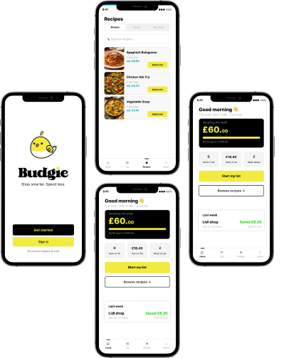
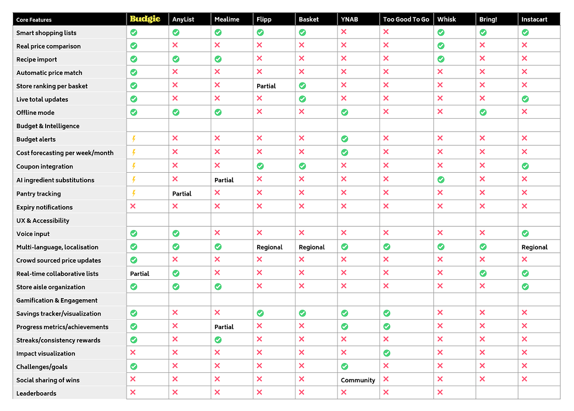
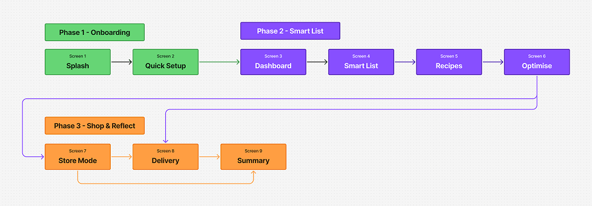
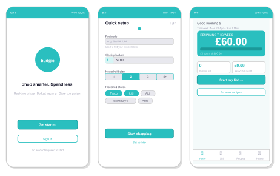
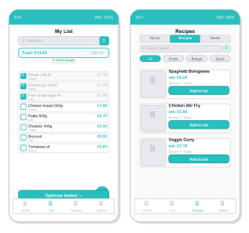
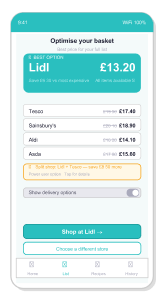
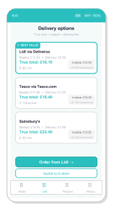
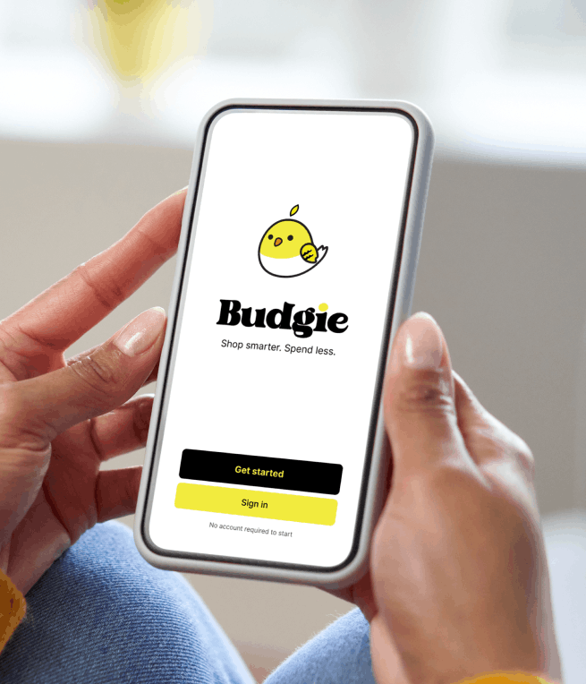
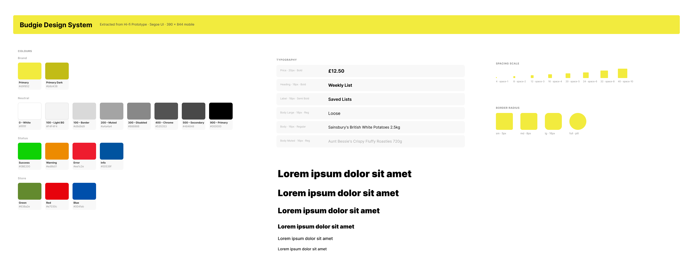
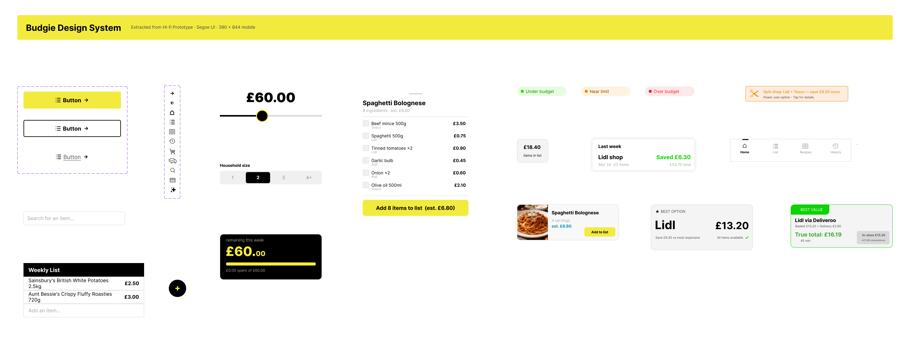

Turning Grocery Price Frustration Into a Smart Shopping Experience
How market research and UX strategy informed the design of a budget-driven shopping assistant

Project Overview:
Budgie began as a personal project to simplify grocery shopping. An initial prototype tested well, but revealed a deeper problem beyond the interface.
Users struggled to budget, felt frustrated by fragmented tools, and were increasingly avoiding in-store shopping. It became clear the product needed a stronger strategic foundation.
I reframed the direction, shifting from a simple utility to a research-driven, budget-first experience. Through competitive analysis and deeper user research, I identified where meaningful value could be created, then developed a second prototype to test this new approach.
This case study explores that shift, from an unfocused concept to a strategically grounded product.
Project type:
Concept product, UX Strategy, Prototype/MVP
Role:
Strategy, Research, Product Design, Prototype
Tools:
Initial Research: Early Exploration to Strategic Reframing.
Before restrategising and redesigning budgie, I conducted research into how grocery shoppers from all walks of life to understand their habits. A few clear themes emerged:
1.
The Budget Paradox
50% of respondents actively budget when grocery shopping, yet most rely on manual methods — mental math, paper lists, or even spreadsheets. Existing apps don't surface pricing until checkout, which is too late to adjust behaviour.
2.
Fragmentation Fatigue
Most users juggle 3–4 separate apps for lists, recipes, deals, and delivery. Every context switch adds cognitive load with no single tool connecting the full journey.
3.
The Delivery Dilemma
30% of participants cited parking, queuing, and physical effort as their biggest shopping pain points. Yet grocery delivery apps prioritise speed over cost — making budget-conscious delivery nearly impossible.
8 participants
2 rounds
Aged between
26 - 70 years old
Regular grocery
shoppers
I developed and tested an initial prototype centred on list creation, budgeting, and store selection. While it was functional, the feedback was underwhelming and revealed a deeper issue beyond the interface.
This is when I took a step back and revisted the problem entirely. Exploring UX strategy principles helped inform this shift, leading to more structured research, including market analysis and deeper competitor evaluation.
Market & Competitor Research.
With clear pain points established, I analysed 10+ apps across grocery, budgeting, and recipe categories, not to replicate what exists, but to identify a genuine gap in the market and where I could create meaningful impact.

Market Gaps and Product Positioning
The Budget Paradox
Apps with real-time pricing (Basket, Flipp, Pinch) don't integrate meal planning, while recipe apps (Paprika, BigOven, Mealime) ignore pricing entirely.
Missing Delivery Integration
Only Whisk links to delivery services, but doesn't help users compare delivery costs vs in-store savings.
No Behavioural Design
Only Too Good To Go uses gamification — but for food waste, not personal savings. No one is applying engagement mechanics to grocery budgeting.
Store Comparison Gap
Only Basket and Pinch compare stores, but they lack the context of meal planning and recipes.
What Budgie Brings to the Table
All in one place:
Budgie connects meal planning, live pricing, store comparison, and delivery options into a single seamless flow — no more switching between apps.
Budget first, always:
Most recipe apps ignore cost, and most price-comparison apps ignore meals. Budgie treats your budget as the starting point, not an afterthought.
Honest delivery costs:
Budgie shows you the real cost of delivery — fee included — so you can decide whether it's actually worth it versus going in store.
Savings made engaging:
Budgie applies light gamification to help you stay motivated and build better spending habits over time.
A weekly rhythm that sticks:
The app is built around a simple loop — plan, optimise, shop, reflect — so it becomes a natural part of your week rather than another tool you forget about.
Easy to get started:
Onboarding is kept simple and frictionless so there's no barrier to getting value quickly. Longer term, affiliate partnerships and integrations offer a path to revenue without ever charging users directly.
Design Process.
From research to design decisions
Each design decision maps directly back to a research finding. Rather than borrowing features arbitrarily, every element was chosen with a specific user problem in mind.
- Mealime's onboarding → adapted to focus on budget, not just dietary preferences
- Too Good To Go's gamification → applied to personal savings, not surplus food
- Basket's price comparison → integrated into the meal planning flow
User flow

Why This Flow Works (With Wireframes)

Splash → Quick Setup (No Signup Required)
Signup is delayed to reduce friction and build trust first. Users only enter what directly impacts pricing. Then set your budget.
Smart List: Pricing Visible at Point of Decision
Cost is shown while users are choosing, not after. This shifts decisions earlier and avoids the usual “oh shit” moment at checkout. Recipes can also be added, automatically pulling ingredients into the list.


Basket Optimisation: Reveals Savings Before Commitment
Comparing stores side by side showing clear comparative savings. Split shopping adds a bit more effort, but gives power users a way to squeeze out the most savings.
Store Mode / Delivery Checkout: Useful During the Shop
The app stays useful during the actual shop, not just before it. That adds complexity on the backend, but it’s what makes the product part of someone’s routine instead of a one-off tool.

Savings Feedback: Reinforces Behaviour Change
Showing savings after the shop gives users a sense of reward. It’s less about the numbers and more about reinforcing the behaviour.
Prototype.

With the research informing the direction and the flow mapped out, I built an interactive prototype of the end-to-end loop using Claude Code and MCP integrations — rather than static mockups. This felt like the right call: if Budgie's value is real-time connected intelligence, a static prototype couldn't represent that honestly. The goal being to use this to validate my research assumptions with real users.
Click here to view prototypeDesign System
Before building the prototype, I created a design system in Figma to establish visual consistency and speed up iteration. The system defines the core tokens - colour, typography, spacing, and iconography - that carry Budgie's budget-first personality across every screen.

Built with MCP integrations, tokens and components could be referenced directly during the prototype build rather than manually maintained across files — reducing inconsistency and making layout iteration faster.

User testing and research validation.
The prototype of my most viable product is built. The next step is to put it in front of real users. Rather than guessing whether the design decisions land, I've defined four test tasks that map directly back to the core research findings — each one designed to validate a specific assumption.
Test Tasks
Task 1 Budget Setting + Real-Time Tracking Participants are asked to do a weekly shop for £60, add 8 items, and describe at what point they felt confident they'd stay within budget. This tests whether the running total changes shopping behaviour.
Task 2 Store Comparison / Split Shop Participants build a list and find the cheapest way to buy everything, open to shopping at more than one store. This tests comprehension of the split shop concept and whether the saving feels worth the effort.
Task 3 Recipe to Shopping List Participants use the app to find a recipe and add its ingredients to their list. This tests friction in the handoff between recipe browsing and list building, and whether pricing is visible at the recipe stage.
Task 4 Delivery vs In-Store Participants are asked to get their list delivered without going to the shops. This tests whether they notice the true cost comparison (delivery fee included) and whether it affects their decision.
Impact & Learnings.
What’s next
The research identified the problem. The strategy shaped the direction. The prototype makes it real. The next step is usability testing across these four tasks to validate whether the design decisions hold up with real users — and to iterate based on what the data shows.
Metrics I'd Track at Launch
- Weekly active users → measuring habit formation
- Average savings per shop → measuring value delivery
- Recipe-to-shop conversion rate → measuring end-to-end flow adoption
What worked
- Leading with strategy before interface design created clearer, more defensible decisions
- Focusing on one killer feature — real-time pricing — gave the product a distinct identity
- Using secondary research and competitive analysis as strategic inputs saved time while still grounding decisions in user needs
What I'd Do Differently
- Conduct price sensitivity testing earlier — does seeing £6 in savings actually change behaviour?
- Validate the delivery integration with convenience-first users who rely on Deliveroo or Getir — does budget consciousness matter in that context?